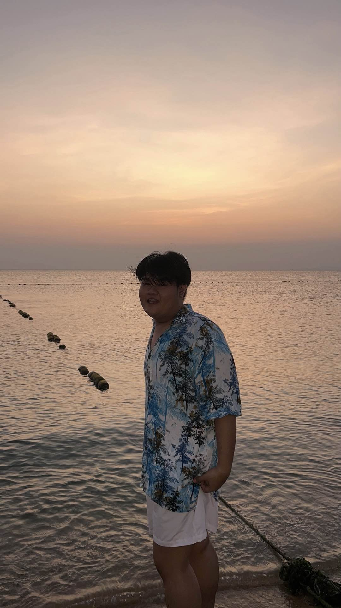

ชื่อเล่น: ตะวัน
สาขาวิชา: DIT: เทคโนโลยีสารสนเทศ
กลุ่มเรียน: G1
ผมต้องการนำความรู้ไปพัฒนาต่อและทำงานในบริษัทดีๆที่สนใจไว้ ไม่ว่าจะเป็นการเขียน Code ออกแบบโดยใช้ทั้ง Front-end และ Back-end ไปพัฒนา นอกจากนั้นผมมองว่าถ้าผมมีความรู้ เเละ เก่งในด้าน Full Stack Web Development จะทำให้ตัวผม มีความสามารถ เเละเป็นที่ต้องการอย่างมาก
ผมคาดหวังว่าต้องมีความรู้ที่สามารถนำไปใช้ทำงานได้จริงทั้งตอนฝึกงานละตอนที่ลงมือทำงานกับบริษัทได้จริงๆ เเละ ยังมองถึงการที่ผมจะทำความรู้ ความสามารถนี้ไปพัฒนาต่อ ทำให้ตัวผมเองเก่งขึ้น ในสายงานด้านนี้
จุดอ่อนของผมคือการที่ผมนั้นไม่สามารถรับความรู้ที่เยอะได้ จึงทำให้ผมรู้สึกว่า ผมต้องทำการพัฒนาให้มากขึ้น ผมจึงต้องฝึกฝนให้มากกว่าคนอื่น
เว็บไซต์ที่ผมชื่นชอบคือ youtube เพราะเป็นแหล่งรวบรวมข้อมูล ทั้งในด้านความรู้ สื่อการเรียนการสอน การสร้างรายได้